vignettes/benchmarks-fastglm.Rmd
benchmarks-fastglm.RmdThis vignette compares fastglm with reference implementations across sample sizes and model classes:
stats::glm(),
glm2::glm.fit2(), and
speedglm::speedglm.wfit(),big.matrix solver paths against the
dense path,MASS::glm.nb(),brglm2::brglmFit() and
logistf::logistf(), including sparse, streaming, and
big.matrix Firth paths,pscl::hurdle() and pscl::zeroinfl().
library(fastglm)
suppressPackageStartupMessages({
library(MASS)
library(pscl)
library(logistf)
library(brglm2)
library(speedglm)
library(Matrix)
library(bigmemory)
library(microbenchmark)
})
bench_unit <- "milliseconds"
.fmt <- function(mb) {
s <- summary(mb, unit = bench_unit)
s <- s[, c("expr", "min", "median", "mean", "max")]
names(s) <- c("expr", "min (ms)", "median (ms)", "mean (ms)", "max (ms)")
s
}
# Summary of one comparison, as a table.
.fmt_table <- function(mb, caption = NULL) {
knitr::kable(.fmt(mb), digits = 2, row.names = FALSE, caption = caption)
}
# Median times with one row per method and one column per sample size.
.timing_table <- function(tim) {
methods <- unique(tim$expr)
sizes <- sort(unique(tim$n))
medians <- tapply(tim$median, list(tim$expr, tim$n), identity)[methods, as.character(sizes), drop = FALSE]
labels <- paste0("n = ", format(sizes, big.mark = ",", scientific = FALSE, trim = TRUE))
knitr::kable(data.frame(Method = methods, medians, check.names = FALSE, row.names = NULL),
col.names = c("Method", labels), digits = 2,
caption = "Median time in milliseconds")
}
# Paired medians for fastglm and brglm2, by family and sample size.
.pair_table <- function(tim) {
keys <- unique(tim[, c("family", "n")])
median_of <- function(method, i) tim$median[tim$expr == method & tim$family == keys$family[i] & tim$n == keys$n[i]]
fast <- vapply(seq_len(nrow(keys)), function(i) median_of("fastglm", i), 0)
reference <- vapply(seq_len(nrow(keys)), function(i) median_of("brglm2", i), 0)
knitr::kable(data.frame(Family = keys$family, n = format(keys$n, big.mark = ",", scientific = FALSE, trim = TRUE),
fastglm = fast, brglm2 = reference, Ratio = reference / fast),
col.names = c("Family", "n", "fastglm (ms)", "brglm2 (ms)", "Time ratio"),
digits = c(0, 0, 2, 2, 1), row.names = FALSE)
}
# Short scientific notation for numbers placed in the text.
.sci <- function(x) formatC(x, format = "e", digits = 1)
.collect <- function(mb, n) {
s <- summary(mb, unit = bench_unit)
data.frame(n = n, expr = as.character(s$expr), median = s$median,
stringsAsFactors = FALSE)
}
# One style for every figure: fastglm is dominant, its solver variants share a
# color and differ by linetype, and comparison methods stay visible but thinner.
library(ggplot2)
.method_colors <- c(fastglm = "#0B5CAD", fastglm_qr = "#0B5CAD", fastglm_chol = "#0B5CAD",
fastglm_nb = "#0B5CAD", fastglm_hurdle = "#0B5CAD", fastglm_zi = "#0B5CAD",
glm.fit = "#D1661F", glm.nb = "#D1661F", brglm2 = "#D1661F", pscl_hurdle = "#D1661F",
pscl_zi = "#D1661F", speedglm = "#1F9E8F", glm2_fit2 = "#9A62C4")
.method_lines <- function(methods) ifelse(methods == "fastglm_qr", "dashed", "solid")
.method_widths <- function(methods) ifelse(grepl("^fastglm", methods), 1.2, 0.6)
.benchmark_theme <- function() {
theme_bw(base_size = 12) +
theme(panel.grid.minor = element_blank(), legend.position = "bottom",
strip.background = element_blank(), strip.text = element_text(hjust = 0))
}
.size_axis <- function() {
scale_x_log10(labels = function(x) format(x, big.mark = ",", scientific = FALSE, trim = TRUE))
}
.plot_scaling <- function(df, title, facet = NULL) {
methods <- unique(as.character(df$expr))
plot <- ggplot(df, aes(n, median, colour = expr, linetype = expr, linewidth = expr, group = expr)) +
geom_line() + geom_point(size = 2.2) +
.size_axis() + scale_y_log10() +
scale_colour_manual(values = .method_colors[methods], breaks = methods) +
scale_linetype_manual(values = setNames(.method_lines(methods), methods), breaks = methods) +
scale_linewidth_manual(values = setNames(.method_widths(methods), methods), breaks = methods) +
labs(x = "Number of observations, log scale",
y = paste0("Median time (", bench_unit, "), log scale"),
title = title, colour = NULL, linetype = NULL, linewidth = NULL) +
.benchmark_theme()
if (!is.null(facet)) plot <- plot + facet_wrap(facet, scales = "free_y")
plot
}
sessionInfo()
#> R version 4.5.1 (2025-06-13)
#> Platform: aarch64-apple-darwin20
#> Running under: macOS Sequoia 15.7.3
#>
#> Matrix products: default
#> BLAS: /Library/Frameworks/R.framework/Versions/4.5-arm64/Resources/lib/libRblas.0.dylib
#> LAPACK: /Library/Frameworks/R.framework/Versions/4.5-arm64/Resources/lib/libRlapack.dylib; LAPACK version 3.12.1
#>
#> locale:
#> [1] en_US.UTF-8/en_US.UTF-8/en_US.UTF-8/C/en_US.UTF-8/en_US.UTF-8
#>
#> time zone: America/Chicago
#> tzcode source: internal
#>
#> attached base packages:
#> [1] stats graphics grDevices utils datasets methods base
#>
#> other attached packages:
#> [1] ggplot2_4.0.1 microbenchmark_1.5.0 bigmemory_4.6.4
#> [4] speedglm_0.3-5 biglm_0.9-3 DBI_1.2.3
#> [7] Matrix_1.7-5 brglm2_1.1.1 logistf_1.26.1
#> [10] pscl_1.5.9 MASS_7.3-66 fastglm_0.1.3
#>
#> loaded via a namespace (and not attached):
#> [1] gtable_0.3.6 shape_1.4.6.1 xfun_0.57
#> [4] formula.tools_1.7.1 lattice_0.22-7 numDeriv_2016.8-1.1
#> [7] vctrs_0.7.2 tools_4.5.1 Rdpack_2.6.4
#> [10] generics_0.1.4 enrichwith_0.5.0 sandwich_3.1-1
#> [13] tibble_3.3.0 pan_1.9 pkgconfig_2.0.3
#> [16] jomo_2.7-6 RColorBrewer_1.1-3 S7_0.2.1
#> [19] uuid_1.2-1 lifecycle_1.0.5 farver_2.1.2
#> [22] compiler_4.5.1 statmod_1.5.1 codetools_0.2-20
#> [25] glmnet_4.1-10 mice_3.18.0 pillar_1.11.1
#> [28] nloptr_2.2.1 tidyr_1.3.1 reformulas_0.4.1
#> [31] iterators_1.0.14 rpart_4.1.24 boot_1.3-31
#> [34] multcomp_1.4-28 foreach_1.5.2 mitml_0.4-5
#> [37] nlme_3.1-168 tidyselect_1.2.1 mvtnorm_1.3-7
#> [40] dplyr_1.1.4 purrr_1.2.1 splines_4.5.1
#> [43] operator.tools_1.6.3.1 grid_4.5.1 cli_3.6.6
#> [46] magrittr_2.0.4 survival_3.8-3 broom_1.0.12
#> [49] TH.data_1.1-3 bigmemory.sri_0.1.8 withr_3.0.2
#> [52] scales_1.4.0 backports_1.5.0 estimability_1.5.1
#> [55] emmeans_1.11.2 nnet_7.3-20 lme4_1.1-37
#> [58] zoo_1.8-14 evaluate_1.0.5 knitr_1.51
#> [61] rbibutils_2.3 mgcv_1.9-3 nleqslv_3.3.5
#> [64] rlang_1.3.0 Rcpp_1.1.1-1.1 xtable_1.8-4
#> [67] glue_1.8.0 minqa_1.2.8 R6_2.6.1Logistic regression with an increasing number of observations,
holding p = 30 fixed. Comparing the default
fastglm path (method = 0, pivoted QR), the
LLT-Cholesky path (method = 2),
stats::glm.fit(), glm2::glm.fit2(), and
speedglm::speedglm.wfit().
set.seed(1)
p <- 30
run_one_logit <- function(n) {
X <- matrix(rnorm(n * p), n, p)
beta <- rnorm(p) * 0.05
y <- rbinom(n, 1, plogis(X %*% beta))
microbenchmark(
fastglm_qr = fastglm(X, y, family = binomial(), method = 0),
fastglm_chol = fastglm(X, y, family = binomial(), method = 2),
glm.fit = glm.fit(X, y, family = binomial()),
glm2_fit2 = glm2::glm.fit2(X, y, family = binomial()),
speedglm = speedglm::speedglm.wfit(y = y, X = X,
family = binomial(),
intercept = FALSE),
times = 5L
)
}
logit_tim <- list()
for (n in c(1e3, 1e4, 1e5)) {
mb <- run_one_logit(n)
logit_tim[[length(logit_tim) + 1]] <- .collect(mb, n)
}
logit_tim <- do.call(rbind, logit_tim)
.timing_table(logit_tim)| Method | n = 1,000 | n = 10,000 | n = 100,000 |
|---|---|---|---|
| fastglm_qr | 1.43 | 12.84 | 125.61 |
| fastglm_chol | 0.79 | 5.06 | 51.93 |
| glm.fit | 3.03 | 32.93 | 380.41 |
| glm2_fit2 | 3.16 | 33.22 | 451.84 |
| speedglm | 2.42 | 23.57 | 286.21 |
.plot_scaling(logit_tim, "Logistic regression: median time vs n (p = 30)")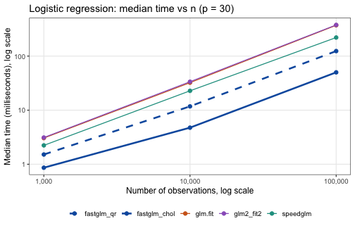
The same comparison for Poisson regression with a log link:
run_one_poisson <- function(n) {
X <- matrix(rnorm(n * p), n, p)
beta <- rnorm(p) * 0.05
y <- rpois(n, exp(X %*% beta + 1))
microbenchmark(
fastglm_qr = fastglm(X, y, family = poisson(), method = 0),
fastglm_chol = fastglm(X, y, family = poisson(), method = 2),
glm.fit = glm.fit(X, y, family = poisson()),
glm2_fit2 = glm2::glm.fit2(X, y, family = poisson()),
speedglm = speedglm::speedglm.wfit(y = y, X = X,
family = poisson(),
intercept = FALSE),
times = 5L
)
}
pois_tim <- list()
for (n in c(1e3, 1e4, 1e5)) {
mb <- run_one_poisson(n)
pois_tim[[length(pois_tim) + 1]] <- .collect(mb, n)
}
pois_tim <- do.call(rbind, pois_tim)
.timing_table(pois_tim)| Method | n = 1,000 | n = 10,000 | n = 100,000 |
|---|---|---|---|
| fastglm_qr | 1.43 | 11.99 | 121.73 |
| fastglm_chol | 0.82 | 4.54 | 47.79 |
| glm.fit | 3.12 | 30.45 | 387.58 |
| glm2_fit2 | 3.20 | 31.19 | 395.62 |
| speedglm | 2.51 | 22.57 | 235.00 |
.plot_scaling(pois_tim, "Poisson regression: median time vs n (p = 30)")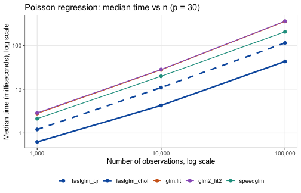
These timings compare two ways to solve the weighted regression in each fitting iteration: QR uses the predictor matrix directly, whereas Cholesky works with its smaller crossproduct. Their costs depend on the numbers of rows and columns, the response family, and the numerical libraries used. The observed ratios apply to the displayed cases; attributing a difference specifically to parallel computation would require a separate comparison with threading controlled.
A sparse design matrix from one-hot encoding a 100-level factor
against a continuous covariate. The column count is
p = 200; fastglm on the dense matrix stores all
200 columns, while the sparse path operates only on the nonzero
entries:
set.seed(2)
n <- 5e4
g <- factor(sample.int(100, n, replace = TRUE))
xn <- rnorm(n)
Xd <- model.matrix(~ g * xn)
Xs <- as(Xd, "CsparseMatrix")
betas <- rnorm(ncol(Xd)) / 4
y <- rbinom(n, 1, plogis(Xd %*% betas))
mb_sparse <- microbenchmark(
fastglm_dense = fastglm(Xd, y, family = binomial(), method = 2),
fastglm_sparse = fastglm(Xs, y, family = binomial(), method = 2),
times = 5L
)
.fmt_table(mb_sparse)| expr | min (ms) | median (ms) | mean (ms) | max (ms) |
|---|---|---|---|---|
| fastglm_dense | 308.30 | 311.63 | 311.98 | 315.80 |
| fastglm_sparse | 24.22 | 27.68 | 33.06 | 47.03 |
The design has 200 columns, and 2% of its entries are nonzero.
A big.matrix comparison on a large dense design, with
n = 5e5 and p = 20. The file-backed
big.matrix reads blocks of rows and gives the same
estimates:
set.seed(3)
n <- 5e5
p <- 20
X <- matrix(rnorm(n * p), n, p)
Xb <- as.big.matrix(X)
y <- rbinom(n, 1, plogis(X %*% rnorm(p) * 0.05))
mb_big <- microbenchmark(
dense = fastglm(X, y, family = binomial(), method = 2),
big.matrix = fastglm(Xb, y, family = binomial(), method = 2),
times = 3L
)
.fmt_table(mb_big)| expr | min (ms) | median (ms) | mean (ms) | max (ms) |
|---|---|---|---|---|
| dense | 176.55 | 179.85 | 208.01 | 267.63 |
| big.matrix | 219.15 | 221.09 | 220.90 | 222.47 |
f1 <- fastglm(X, y, family = binomial(), method = 2)
f2 <- fastglm(Xb, y, family = binomial(), method = 2)The largest coefficient difference between the two fits is 1.2e-15.
Reading a file-backed matrix in blocks adds overhead but can reduce the
need to copy a large predictor matrix. Another option is to supply
blocks through fastglm_source() and fit them with
fastglm_streaming(), as described in the large-data
vignette. These choices have different memory requirements and should be
compared on the intended data size.
fastglm_nb() against MASS::glm.nb() across
a range of sample sizes. The data-generating process is
NB(mu, theta = 2) with three covariates and an
intercept:
set.seed(4)
run_one_nb <- function(n) {
X <- cbind(1, matrix(rnorm(n * 3), n, 3))
mu <- exp(X %*% c(0.5, 0.4, -0.2, 0.3))
y <- MASS::rnegbin(n, mu = mu, theta = 2)
df <- data.frame(y = y, x1 = X[, 2], x2 = X[, 3], x3 = X[, 4])
microbenchmark(
fastglm_nb = fastglm_nb(X, y),
glm.nb = MASS::glm.nb(y ~ x1 + x2 + x3, data = df),
times = 5L
)
}
nb_tim <- list()
for (n in c(1e3, 1e4, 1e5, 5e5)) {
mb <- run_one_nb(n)
nb_tim[[length(nb_tim) + 1]] <- .collect(mb, n)
}
nb_tim <- do.call(rbind, nb_tim)
.timing_table(nb_tim)| Method | n = 1,000 | n = 10,000 | n = 100,000 | n = 500,000 |
|---|---|---|---|---|
| fastglm_nb | 1.80 | 12.82 | 116.06 | 591.15 |
| glm.nb | 8.07 | 65.48 | 563.15 | 2270.57 |
.plot_scaling(nb_tim, "Negative-binomial joint MLE: median time vs n")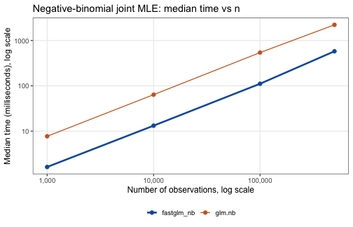
For the largest case, both functions target the same maximum likelihood fit, and numerical agreement also depends on convergence and stopping tolerances. Dense fastglm fits perform both coefficient and theta updates in C++, which reduces repeated calls between R and compiled code.
set.seed(99)
n <- 5e5
X <- cbind(1, matrix(rnorm(n * 3), n, 3))
mu <- exp(X %*% c(0.5, 0.4, -0.2, 0.3))
y <- MASS::rnegbin(n, mu = mu, theta = 2)
df <- data.frame(y = y, x1 = X[, 2], x2 = X[, 3], x3 = X[, 4])
f_nb <- fastglm_nb(X, y)
m_nb <- MASS::glm.nb(y ~ x1 + x2 + x3, data = df)The largest coefficient difference is 2.2e-14, the difference in theta is 9.7e-12, and the difference in log likelihood is 2.3e-09.
Firth bias reduction (Firth, 1993; Kosmidis and Firth, 2009) is
supported for all standard GLM families via firth = TRUE.
We benchmark against brglm2::brglmFit(type = "AS_mean"),
which implements the same AS_mean adjustment, and against
logistf::logistf() for the binomial-logit special case.
First, the canonical logistic benchmark on the sex2 dataset and a larger simulated example:
data(sex2, package = "logistf")
X_sex2 <- model.matrix(~ age + oc + vic + vicl + vis + dia, data = sex2)
y_sex2 <- sex2$case
mb_firth_logistf <- microbenchmark(
fastglm = fastglm(X_sex2, y_sex2, family = binomial(), firth = TRUE),
logistf = logistf(case ~ age + oc + vic + vicl + vis + dia, data = sex2),
brglm2 = glm(case ~ age + oc + vic + vicl + vis + dia, data = sex2,
family = binomial(), method = "brglmFit", type = "AS_mean"),
times = 10L
)
.fmt_table(mb_firth_logistf, caption = paste0("Heinze-Schemper sex2 data, n = ", nrow(sex2)))| expr | min (ms) | median (ms) | mean (ms) | max (ms) |
|---|---|---|---|---|
| fastglm | 0.65 | 0.69 | 0.78 | 1.56 |
| logistf | 7.40 | 7.46 | 7.60 | 8.61 |
| brglm2 | 2.58 | 2.73 | 2.98 | 5.20 |
Next, a comprehensive comparison of
fastglm(firth = TRUE) against brglm2 across
all supported families and links. We fix n = 10000 and
p = 5 to see the per-family speedup:
set.seed(123)
n <- 10000; p_firth <- 5
X_firth <- cbind(1, matrix(rnorm(n * p_firth), n, p_firth))
eta_firth <- X_firth %*% c(0.5, 0.3, -0.2, 0.1, 0.05, -0.1)
firth_families <- list(
list(fam = binomial("logit"), label = "binomial logit",
y = rbinom(n, 1, plogis(eta_firth))),
list(fam = binomial("probit"), label = "binomial probit",
y = rbinom(n, 1, plogis(eta_firth))),
list(fam = binomial("cloglog"), label = "binomial cloglog",
y = rbinom(n, 1, plogis(eta_firth))),
list(fam = poisson("log"), label = "poisson log",
y = rpois(n, exp(eta_firth))),
list(fam = poisson("sqrt"), label = "poisson sqrt",
y = rpois(n, exp(eta_firth))),
list(fam = Gamma("log"), label = "Gamma log",
y = rgamma(n, shape = 5, rate = 5 / exp(eta_firth))),
list(fam = gaussian("identity"), label = "gaussian identity",
y = as.numeric(eta_firth) + rnorm(n, 0, 0.5)),
list(fam = gaussian("log"), label = "gaussian log",
y = pmax(as.numeric(eta_firth) + rnorm(n, 0, 0.5), 0.01))
)
xnames <- paste0("x", seq_len(p_firth))
df_firth <- data.frame(X_firth[, -1])
names(df_firth) <- xnames
fml_firth <- as.formula(paste("y ~", paste(xnames, collapse = " + ")))
firth_all_tim <- list()
for (fi in firth_families) {
df_firth$y <- fi$y
mb <- microbenchmark(
fastglm = fastglm(X_firth, fi$y, family = fi$fam, firth = TRUE),
brglm2 = glm(fml_firth, data = df_firth, family = fi$fam,
method = "brglmFit", type = "AS_mean"),
times = 10L
)
firth_all_tim[[length(firth_all_tim) + 1]] <-
transform(.collect(mb, n), family = fi$label)
}
firth_all_tim <- do.call(rbind, firth_all_tim)
.pair_table(firth_all_tim)| Family | n | fastglm (ms) | brglm2 (ms) | Time ratio |
|---|---|---|---|---|
| binomial logit | 10,000 | 4.65 | 15.25 | 3.3 |
| binomial probit | 10,000 | 9.44 | 16.94 | 1.8 |
| binomial cloglog | 10,000 | 8.85 | 18.40 | 2.1 |
| poisson log | 10,000 | 5.27 | 125.99 | 23.9 |
| poisson sqrt | 10,000 | 3.04 | 124.81 | 41.0 |
| Gamma log | 10,000 | 3.45 | 111.15 | 32.2 |
| gaussian identity | 10,000 | 1.65 | 23.43 | 14.2 |
| gaussian log | 10,000 | 7.33 | 33.41 | 4.6 |
The median time for each family, with each pair of methods joined by a line:
firth_all_tim$family <- reorder(firth_all_tim$family, firth_all_tim$median, max)
ggplot(firth_all_tim, aes(median, family, colour = expr, group = family)) +
geom_line(colour = "grey70") + geom_point(size = 2.4) +
scale_x_log10() +
scale_colour_manual(values = .method_colors[c("fastglm", "brglm2")], breaks = c("fastglm", "brglm2")) +
labs(x = paste0("Median time (", bench_unit, "), log scale"), y = NULL, colour = NULL,
title = paste0("Firth bias-reduced GLMs: fastglm and brglm2 (n = ", n, ")")) +
.benchmark_theme()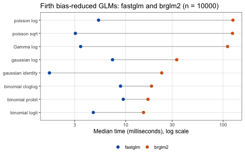
Scaling with sample size for a representative subset of families:
set.seed(123)
firth_scaling_fams <- list(
list(fam = binomial("logit"), label = "binomial logit"),
list(fam = poisson("log"), label = "poisson log"),
list(fam = Gamma("log"), label = "Gamma log"),
list(fam = gaussian("identity"), label = "gaussian identity")
)
firth_scale_tim <- list()
for (n_val in c(1e3, 1e4, 5e4)) {
X_s <- cbind(1, matrix(rnorm(n_val * p_firth), n_val, p_firth))
eta_s <- X_s %*% c(0.5, 0.3, -0.2, 0.1, 0.05, -0.1)
df_s <- data.frame(X_s[, -1])
names(df_s) <- xnames
for (fi in firth_scaling_fams) {
y_s <- switch(fi$fam$family,
"binomial" = rbinom(n_val, 1, plogis(eta_s)),
"poisson" = rpois(n_val, exp(eta_s)),
"Gamma" = rgamma(n_val, shape = 5, rate = 5 / exp(eta_s)),
"gaussian" = as.numeric(eta_s) + rnorm(n_val, 0, 0.5)
)
df_s$y <- y_s
mb <- microbenchmark(
fastglm = fastglm(X_s, y_s, family = fi$fam, firth = TRUE),
brglm2 = glm(fml_firth, data = df_s, family = fi$fam,
method = "brglmFit", type = "AS_mean"),
times = 5L
)
firth_scale_tim[[length(firth_scale_tim) + 1]] <-
transform(.collect(mb, n_val), family = fi$label)
}
}
firth_scale_tim <- do.call(rbind, firth_scale_tim)
.pair_table(firth_scale_tim)| Family | n | fastglm (ms) | brglm2 (ms) | Time ratio |
|---|---|---|---|---|
| binomial logit | 1,000 | 1.08 | 2.63 | 2.4 |
| poisson log | 1,000 | 2.20 | 17.06 | 7.8 |
| Gamma log | 1,000 | 0.96 | 13.46 | 14.1 |
| gaussian identity | 1,000 | 0.65 | 4.39 | 6.7 |
| binomial logit | 10,000 | 6.32 | 18.87 | 3.0 |
| poisson log | 10,000 | 5.17 | 131.05 | 25.3 |
| Gamma log | 10,000 | 5.00 | 119.97 | 24.0 |
| gaussian identity | 10,000 | 1.47 | 22.64 | 15.4 |
| binomial logit | 50,000 | 26.29 | 79.68 | 3.0 |
| poisson log | 50,000 | 25.84 | 647.87 | 25.1 |
| Gamma log | 50,000 | 14.83 | 537.74 | 36.3 |
| gaussian identity | 50,000 | 5.49 | 110.94 | 20.2 |
.plot_scaling(firth_scale_tim, "Firth bias reduction: median time by family", facet = ~family)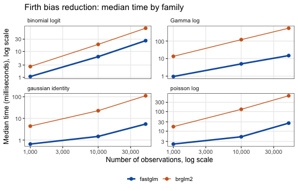
Firth bias reduction works with all six decomposition methods. This example checks that they give the same coefficients and compares their timings:
set.seed(123)
n_meth <- 10000; p_meth <- 10
X_meth <- cbind(1, matrix(rnorm(n_meth * (p_meth - 1)), n_meth, p_meth - 1))
y_meth <- rbinom(n_meth, 1, plogis(X_meth %*% rnorm(p_meth) * 0.1))
ref_coef <- coef(fastglm(X_meth, y_meth, family = binomial(), method = 2, firth = TRUE))
method_names <- c("ColPivQR", "QR", "LLT", "LDLT", "FullPivQR", "SVD")
compared_methods <- c(0L, 1L, 3L, 4L, 5L)
method_differences <- vapply(compared_methods, function(m) {
max(abs(coef(fastglm(X_meth, y_meth, family = binomial(), method = m, firth = TRUE)) - ref_coef))
}, 0)
knitr::kable(data.frame(Method = method_names[compared_methods + 1], Difference = .sci(method_differences)),
col.names = c("Method", "Largest coefficient difference from LLT"), row.names = FALSE)| Method | Largest coefficient difference from LLT |
|---|---|
| ColPivQR | 5.8e-16 |
| QR | 6.9e-16 |
| LDLT | 8.3e-17 |
| FullPivQR | 6.7e-16 |
| SVD | 3.5e-16 |
mb_methods <- microbenchmark(
ColPivQR = fastglm(X_meth, y_meth, family = binomial(), method = 0, firth = TRUE),
QR = fastglm(X_meth, y_meth, family = binomial(), method = 1, firth = TRUE),
LLT = fastglm(X_meth, y_meth, family = binomial(), method = 2, firth = TRUE),
LDLT = fastglm(X_meth, y_meth, family = binomial(), method = 3, firth = TRUE),
FullPivQR= fastglm(X_meth, y_meth, family = binomial(), method = 4, firth = TRUE),
SVD = fastglm(X_meth, y_meth, family = binomial(), method = 5, firth = TRUE),
times = 5L
)
.fmt_table(mb_methods, caption = paste0("Firth logistic regression, n = ", n_meth, ", p = ", p_meth))| expr | min (ms) | median (ms) | mean (ms) | max (ms) |
|---|---|---|---|---|
| ColPivQR | 7.62 | 7.84 | 8.25 | 9.64 |
| QR | 7.04 | 7.47 | 7.47 | 8.04 |
| LLT | 4.79 | 5.69 | 5.92 | 7.13 |
| LDLT | 5.81 | 6.40 | 6.33 | 7.04 |
| FullPivQR | 3125.84 | 3180.37 | 3201.78 | 3346.50 |
| SVD | 10.93 | 11.53 | 12.25 | 13.88 |
All six methods agree to machine precision. The LLT and LDLT Cholesky
methods are the fastest because they only decompose the
p x p cross-product, while the QR and SVD methods work with
the full n x p matrix.
This example compares several ways to supply the predictor matrix:
ordinary storage, sparse storage of nonzero entries, a
big.matrix, and a function that reads blocks of rows as
needed. Bias reduction uses leverage values, which describe the relative
influence of predictor rows in a weighted regression. Some block-based
calculations reuse these values from the preceding coefficient update.
Agreement with the direct calculation therefore needs to be checked
after convergence.
set.seed(123)
n_sp <- 5000; p_sp <- 6
X_sp <- cbind(1, matrix(rnorm(n_sp * (p_sp - 1)), n_sp, p_sp - 1))
Xs_sp <- as(X_sp, "CsparseMatrix")
Xb_sp <- as.big.matrix(X_sp)
y_sp <- rbinom(n_sp, 1, plogis(X_sp %*% c(-0.3, 0.4, -0.2, 0.1, 0.05, -0.15)))
chunk_size_sp <- 500
chunks_sp <- function(k) {
idx <- ((k - 1) * chunk_size_sp + 1):(k * chunk_size_sp)
list(X = X_sp[idx, , drop = FALSE], y = y_sp[idx])
}
mb_backends <- microbenchmark(
dense = fastglm(X_sp, y_sp, family = binomial(), method = 2, firth = TRUE),
sparse = fastglm(Xs_sp, y_sp, family = binomial(), method = 2, firth = TRUE),
big.matrix = fastglm(Xb_sp, y_sp, family = binomial(), method = 2, firth = TRUE),
streaming = fastglm_streaming(chunks_sp, n_chunks = n_sp / chunk_size_sp,
family = binomial(), method = 2, firth = TRUE),
times = 5L
)
.fmt_table(mb_backends, caption = paste0("Firth logistic regression, n = ", n_sp, ", p = ", p_sp))| expr | min (ms) | median (ms) | mean (ms) | max (ms) |
|---|---|---|---|---|
| dense | 2.11 | 2.30 | 2.48 | 3.44 |
| sparse | 3.87 | 5.35 | 5.00 | 5.76 |
| big.matrix | 2.18 | 2.69 | 2.77 | 3.70 |
| streaming | 5.12 | 5.41 | 5.75 | 7.45 |
# Verify agreement
ref_sp <- coef(fastglm(X_sp, y_sp, family = binomial(), method = 2, firth = TRUE))
sp_c <- coef(fastglm(Xs_sp, y_sp, family = binomial(), method = 2, firth = TRUE))
bm_c <- coef(fastglm(Xb_sp, y_sp, family = binomial(), method = 2, firth = TRUE))
st_c <- coef(fastglm_streaming(chunks_sp, n_chunks = n_sp / chunk_size_sp,
family = binomial(), method = 2, firth = TRUE))
knitr::kable(data.frame(Representation = c("sparse", "big.matrix", "streaming"),
Difference = .sci(c(max(abs(sp_c - ref_sp)), max(abs(bm_c - ref_sp)), max(abs(st_c - ref_sp))))),
col.names = c("Representation", "Largest coefficient difference from dense"), row.names = FALSE)| Representation | Largest coefficient difference from dense |
|---|---|
| sparse | 2.1e-10 |
| big.matrix | 2.1e-10 |
| streaming | 1.1e-10 |
In this logistic example, the reported coefficient differences across data representations are below . Memory and runtime comparisons remain specific to the displayed design. For other families, the mean-bias adjustment is defined by adjusted estimating equations and need not correspond to a penalized likelihood.
fastglm_hurdle against pscl::hurdle across
a range of sample sizes, Poisson count component:
set.seed(6)
run_one_hurdle <- function(n) {
x1 <- rnorm(n); x2 <- rnorm(n)
lam <- exp(0.7 + 0.4 * x1 - 0.3 * x2)
is_pos <- rbinom(n, 1, plogis(-0.4 + 0.5 * x1 + 0.2 * x2))
yt <- integer(n)
for (i in seq_len(n)) {
repeat { v <- rpois(1, lam[i]); if (v > 0) { yt[i] <- v; break } }
}
y <- ifelse(is_pos == 1, yt, 0L)
df <- data.frame(y = y, x1 = x1, x2 = x2)
microbenchmark(
fastglm_hurdle = fastglm_hurdle(y ~ x1 + x2, data = df, dist = "poisson"),
pscl_hurdle = pscl::hurdle (y ~ x1 + x2, data = df, dist = "poisson"),
times = 5L
)
}
hurdle_tim <- list()
for (n in c(1e3, 1e4, 5e4, 1e5)) {
mb <- run_one_hurdle(n)
hurdle_tim[[length(hurdle_tim) + 1]] <- .collect(mb, n)
}
hurdle_tim <- do.call(rbind, hurdle_tim)
.timing_table(hurdle_tim)| Method | n = 1,000 | n = 10,000 | n = 50,000 | n = 100,000 |
|---|---|---|---|---|
| fastglm_hurdle | 0.63 | 3.58 | 18.98 | 38.86 |
| pscl_hurdle | 5.29 | 45.30 | 304.96 | 536.66 |
.plot_scaling(hurdle_tim, "Hurdle Poisson: median time vs n")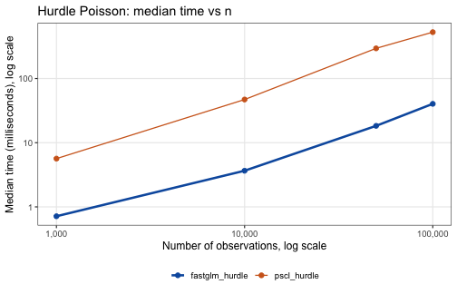
NB hurdle (with simultaneous theta MLE) on a single
moderately large example:
set.seed(7)
n <- 1e4
x1 <- rnorm(n); x2 <- rnorm(n)
lam <- exp(0.8 + 0.4 * x1 - 0.3 * x2)
is_pos <- rbinom(n, 1, plogis(-0.4 + 0.5 * x1))
yt <- integer(n)
for (i in seq_len(n)) {
repeat {
v <- MASS::rnegbin(1, mu = lam[i], theta = 1.5)
if (v > 0) { yt[i] <- v; break }
}
}
y <- ifelse(is_pos == 1, yt, 0L)
df <- data.frame(y = y, x1 = x1, x2 = x2)
mb_hurdle_nb <- microbenchmark(
fastglm_hurdle = fastglm_hurdle(y ~ x1 + x2, data = df, dist = "negbin"),
pscl_hurdle = pscl::hurdle (y ~ x1 + x2, data = df, dist = "negbin"),
times = 3L
)
.fmt_table(mb_hurdle_nb)| expr | min (ms) | median (ms) | mean (ms) | max (ms) |
|---|---|---|---|---|
| fastglm_hurdle | 33.15 | 36.19 | 35.90 | 38.37 |
| pscl_hurdle | 50.62 | 50.80 | 56.37 | 67.69 |
Zero-inflated Poisson against pscl::zeroinfl() across
sample sizes:
set.seed(8)
run_one_zi <- function(n) {
x1 <- rnorm(n); x2 <- rnorm(n)
eta_c <- 0.7 + 0.4 * x1 - 0.3 * x2
eta_z <- -0.4 + 0.5 * x1 + 0.2 * x2
z <- rbinom(n, 1, plogis(eta_z))
y <- ifelse(z == 1, 0L, rpois(n, exp(eta_c)))
df <- data.frame(y = y, x1 = x1, x2 = x2)
microbenchmark(
fastglm_zi = fastglm_zi(y ~ x1 + x2, data = df, dist = "poisson"),
pscl_zi = pscl::zeroinfl(y ~ x1 + x2, data = df, dist = "poisson"),
times = 5L
)
}
zi_tim <- list()
for (n in c(1e3, 1e4, 5e4, 1e5)) {
mb <- run_one_zi(n)
zi_tim[[length(zi_tim) + 1]] <- .collect(mb, n)
}
zi_tim <- do.call(rbind, zi_tim)
.timing_table(zi_tim)| Method | n = 1,000 | n = 10,000 | n = 50,000 | n = 100,000 |
|---|---|---|---|---|
| fastglm_zi | 2.58 | 28.20 | 126.39 | 249.66 |
| pscl_zi | 9.26 | 111.97 | 578.99 | 1165.21 |
.plot_scaling(zi_tim, "Zero-inflated Poisson: median time vs n")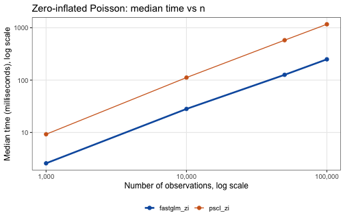
Zero-inflated NB on a single moderately large example:
set.seed(9)
n <- 1e4
x1 <- rnorm(n); x2 <- rnorm(n)
eta_c <- 0.8 + 0.4 * x1 - 0.3 * x2; lam <- exp(eta_c)
eta_z <- -0.4 + 0.5 * x1 + 0.2 * x2
z <- rbinom(n, 1, plogis(eta_z))
y <- ifelse(z == 1, 0L, MASS::rnegbin(n, mu = lam, theta = 2.0))
df <- data.frame(y = y, x1 = x1, x2 = x2)
mb_zi_nb <- microbenchmark(
fastglm_zi = fastglm_zi(y ~ x1 + x2, data = df, dist = "negbin",
em.tol = 1e-8, em.maxit = 200L),
pscl_zi = pscl::zeroinfl(y ~ x1 + x2, data = df, dist = "negbin"),
times = 3L
)
.fmt_table(mb_zi_nb)| expr | min (ms) | median (ms) | mean (ms) | max (ms) |
|---|---|---|---|---|
| fastglm_zi | 73.53 | 77.08 | 76.37 | 78.49 |
| pscl_zi | 149.64 | 162.52 | 158.52 | 163.39 |
A compact summary of the speed advantage fastglm delivers,
expressed as the ratio of reference-implementation median time to
fastglm median time. Larger is better. The reference for each
model class is the canonical R implementation; for the standard GLMs we
report the ratio against the fastest among glm.fit,
glm2, and speedglm so the comparison is
conservative.
.speedup <- function(df, fast_label, ref_labels) {
out <- lapply(split(df, df$n), function(sub) {
fast <- sub$median[sub$expr == fast_label]
if (length(fast) == 0) return(NULL)
ref <- min(sub$median[sub$expr %in% ref_labels])
data.frame(n = sub$n[1], speedup = ref / fast)
})
do.call(rbind, out)
}
su_logit <- .speedup(logit_tim, "fastglm_chol",
c("glm.fit", "glm2_fit2", "speedglm"))
su_pois <- .speedup(pois_tim, "fastglm_chol",
c("glm.fit", "glm2_fit2", "speedglm"))
su_nb <- .speedup(nb_tim, "fastglm_nb", "glm.nb")
firth_avg_tim <- aggregate(median ~ n + expr, data = firth_scale_tim, FUN = mean)
su_firth <- .speedup(firth_avg_tim, "fastglm", "brglm2")
su_hurdle <- .speedup(hurdle_tim, "fastglm_hurdle", "pscl_hurdle")
su_zi <- .speedup(zi_tim, "fastglm_zi", "pscl_zi")
su_all <- rbind(
transform(su_logit, model = "logit"),
transform(su_pois, model = "poisson"),
transform(su_nb, model = "neg-binomial"),
transform(su_firth, model = "Firth (avg)"),
transform(su_hurdle, model = "hurdle"),
transform(su_zi, model = "zero-inflated")
)
su_all$model <- factor(su_all$model, levels = unique(su_all$model))
ggplot(su_all, aes(n, speedup, colour = model, shape = model, group = model)) +
geom_hline(yintercept = 1, linetype = 2, colour = "grey60") +
geom_line(linewidth = 0.8) + geom_point(size = 2.4) +
.size_axis() + scale_y_log10() +
scale_colour_manual(values = c("#0B5CAD", "#D1661F", "#1F9E8F", "#9A62C4", "#9C8200", "#D0628E")) +
labs(x = "Number of observations, log scale",
y = "Reference time / fastglm time, log scale",
title = "fastglm time ratio against each reference, by model class",
colour = NULL, shape = NULL) +
.benchmark_theme()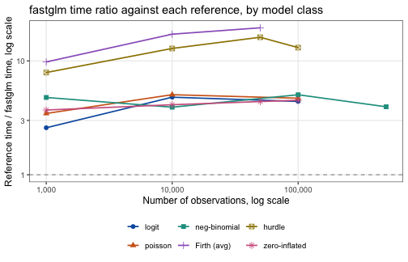
Speed advantages depend on the design, so these comparisons do not establish a uniform speed or convergence advantage. Any timing comparison should first check coefficients, fitted means, uncertainty calculations, and convergence.
These comparisons use packages that fit the same cumulative-link models. Each design has 10 predictors, and each time includes coefficient covariance. A time is compared only when that fit converged and agreed with fastglm on the log likelihood and common slopes.
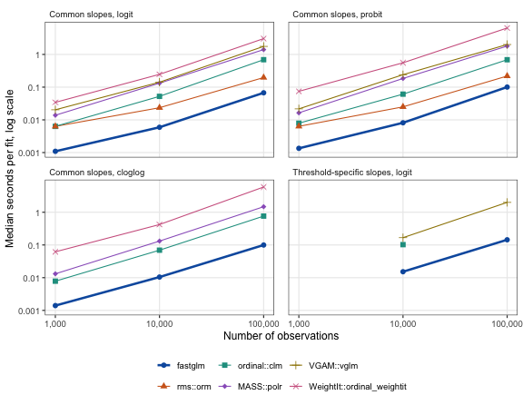
| Link | Method | Seconds | Time ratio |
|---|---|---|---|
| logit | fastglm |
0.067 | 1.0 |
| logit | rms::orm |
0.196 | 2.9 |
| logit | ordinal::clm |
0.695 | 10.3 |
| logit | MASS::polr |
1.392 | 20.7 |
| logit | VGAM::vglm |
1.783 | 26.5 |
| logit | WeightIt::ordinal_weightit |
3.021 | 44.9 |
| probit | fastglm |
0.100 | 1.0 |
| probit | rms::orm |
0.219 | 2.2 |
| probit | ordinal::clm |
0.688 | 6.9 |
| probit | MASS::polr |
1.794 | 17.9 |
| probit | VGAM::vglm |
1.920 | 19.2 |
| probit | WeightIt::ordinal_weightit |
6.300 | 62.9 |
| cloglog | fastglm |
0.098 | 1.0 |
| cloglog | ordinal::clm |
0.747 | 7.6 |
| cloglog | MASS::polr |
1.403 | 14.3 |
| cloglog | VGAM::vglm |
6.508 | NA |
| cloglog | WeightIt::ordinal_weightit |
5.783 | 58.8 |
The table shows 100,000 observations and 5 categories. The ratio is
the comparison time divided by the fastglm time.
rms::orm was timed for logit and probit only. For cloglog,
VGAM::vglm warned about intersecting predictors and
returned a different fit, so it has no ratio.
The threshold-specific panel has no comparison at 1,000 observations,
because the fastglm fit reported nonconvergence for that
design: the best fit with ordered cumulative probabilities at every row
lies on the ordering boundary. ordinal::clm reported
convergence with a higher log likelihood, but its cumulative predictors
cross at 3 of the 1,000 rows. At 100,000 observations,
ordinal::clm reported that it had not converged, so it is
omitted there as well.
With 20,000 observations, rms::orm overtakes
fastglm between 30 and 300 categories:
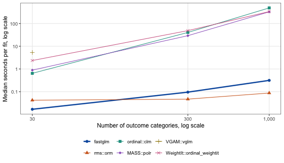
| Categories | Method | Seconds | Time ratio |
|---|---|---|---|
| 30 | fastglm |
0.017 | 1.00 |
| 30 | rms::orm |
0.042 | 2.51 |
| 30 | ordinal::clm |
0.643 | 38.02 |
| 30 | MASS::polr |
0.888 | 52.56 |
| 30 | VGAM::vglm |
5.331 | 315.44 |
| 30 | WeightIt::ordinal_weightit |
2.352 | 139.15 |
| 300 | fastglm |
0.096 | 1.00 |
| 300 | rms::orm |
0.047 | 0.49 |
| 300 | ordinal::clm |
40.457 | 421.96 |
| 300 | MASS::polr |
29.138 | 303.90 |
| 300 | WeightIt::ordinal_weightit |
48.617 | 507.07 |
| 1000 | fastglm |
0.315 | 1.00 |
| 1000 | rms::orm |
0.088 | 0.28 |
| 1000 | ordinal::clm |
484.423 | 1537.47 |
| 1000 | MASS::polr |
325.835 | 1034.14 |
| 1000 | WeightIt::ordinal_weightit |
334.278 | 1060.94 |
rms::orm is designed for outcomes with very many
distinct values and is the faster choice in that range.
VGAM::vglm was not run above 30 categories because it would
need about 160 GB of memory at 1,000.
None of these packages fits mean bias-reduced cumulative-link models or reads ordinal data in blocks:
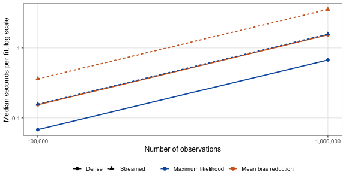
| Observations | Fit | Seconds | Largest coefficient difference from dense fit |
|---|---|---|---|
| 100,000 | Dense ML | 0.066 | 0.0e+00 |
| 100,000 | Dense mean bias reduction | 0.155 | 0.0e+00 |
| 100,000 | Streamed ML | 0.154 | 2.2e-16 |
| 100,000 | Streamed mean bias reduction | 0.369 | 1.1e-16 |
| 1,000,000 | Dense ML | 0.671 | 0.0e+00 |
| 1,000,000 | Dense mean bias reduction | 1.533 | 0.0e+00 |
| 1,000,000 | Streamed ML | 1.596 | 1.1e-16 |
| 1,000,000 | Streamed mean bias reduction | 3.573 | 3.0e-17 |
Streamed fits use blocks of 10,000 rows. The last column compares each streamed fit with the dense fit of the same estimator.
Enea, M. (2009). Fitting linear models and generalized linear models with large data sets in R. In Statistical Methods for the Analysis of Large Data-sets, Italian Statistical Society. speedglm package documentation.
Firth, D. (1993). Bias reduction of maximum likelihood estimates. Biometrika, 80(1), 27–38. doi:10.1093/biomet/80.1.27
Heinze, G. and Schemper, M. (2002). A solution to the problem of separation in logistic regression. Statistics in Medicine, 21(16), 2409–2419. doi:10.1002/sim.1047
Kosmidis, I. and Firth, D. (2009). Bias reduction in exponential family nonlinear models. Biometrika, 96(4), 793–804. doi:10.1093/biomet/asp055
Marschner, I. C. (2011). glm2: Fitting generalized linear models with convergence problems. The R Journal, 3(2), 12–15. doi:10.32614/RJ-2011-012
Venables, W. N. and Ripley, B. D. (2002). Modern Applied Statistics with S (4th ed.). Springer.
Zeileis, A., Kleiber, C., and Jackman, S. (2008). Regression models for count data in R. Journal of Statistical Software, 27(8), 1–25. doi:10.18637/jss.v027.i08